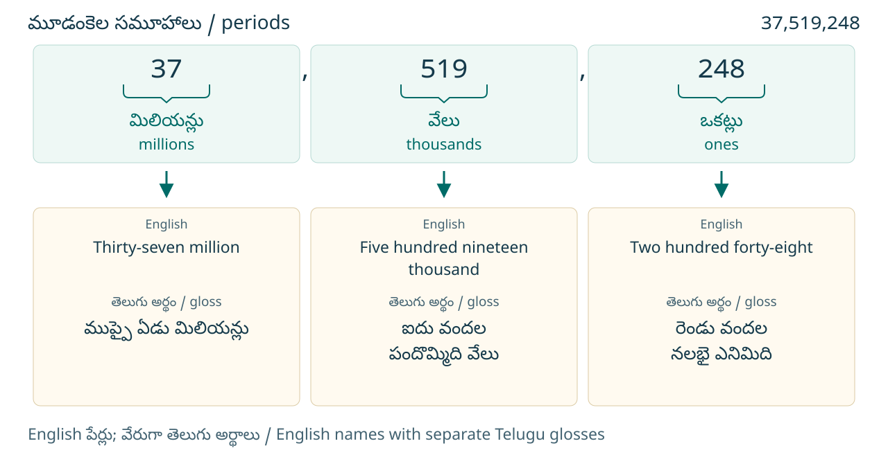
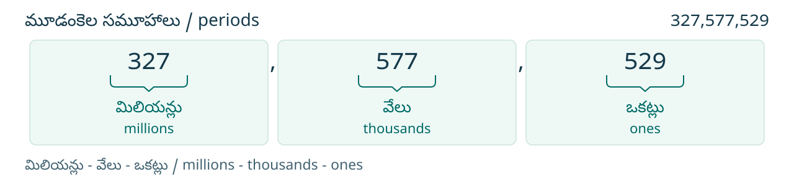
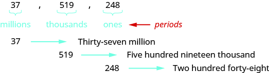
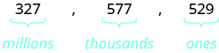

మూలపాఠం అనువాదం · Telugu source translation
స్థాన విలువ ఆధారంగా పూర్ణాంకాలను అక్షరాలలో రాయడం
చెక్కు రాసేటప్పుడు మొత్తాన్ని అంకెల్లోనూ అక్షరాల్లోనూ రాస్తారు. ఒక సంఖ్యను అక్షరాలలో రాయడానికి, ప్రతి మూడంకెల సమూహంలోని సంఖ్య పేరును రాసి, దాని తరువాత ఆ సమూహం పేరు రాయండి. మూలపాఠపు ఇంగ్లీషు పద్ధతిలో సమూహం పేరును ఇలా రాసేటప్పుడు చివరి ‘s’ తీసివేస్తారు: ఉదాహరణకు millions బదులు million. ఇది ఇంగ్లీషు పదరూపానికి సంబంధించిన సూచన; తెలుగు పదాల చివరి అక్షరాన్ని తీసివేయమని కాదు. అతిపెద్ద స్థాన విలువ గల ఎడమవైపు అంకె నుంచి మొదలుపెట్టండి. కామాలు సమూహాలను వేరు చేస్తాయి. అందువల్ల సంఖ్యలో కామా ఉన్నచోట, అక్షరాలలో రాసిన సమూహాల పేర్ల మధ్య కూడా కామా పెట్టండి. అతి చిన్న స్థానాలు ఉన్న ఒకట్ల సమూహానికి మాత్రం సమూహం పేరును జోడించరు.
అన్ని నిలువు వరుసలను చూడటానికి పటాన్ని అడ్డంగా జరపండి.

కాబట్టి అనే సంఖ్యను ముప్పై ఏడు మిలియన్ల, ఐదు వందల పందొమ్మిది వేల, రెండు వందల నలభై ఎనిమిది అని రాస్తాం. మూలపాఠపు ఇంగ్లీషు పేరు: thirty-seven million, five hundred nineteen thousand, two hundred forty-eight.
పూర్ణాంకాన్ని మూలపాఠం అనుసరించే ఇంగ్లీషు పద్ధతిలో పేరుతో రాసేటప్పుడు and (ఇంగ్లీషు పదం) ను ఉపయోగించరని గమనించండి. ఈ సూచనను తెలుగు వాక్యాల్లో సంధాన పదాలు వాడకూడదనే నియమంగా తీసుకోకండి.
సంఖ్య ను అక్షరాలలో రాయండి.
సాధన — Solution
చిన్న తెరపై 2 నిలువు వరుసలూ చూడటానికి పట్టికను అడ్డంగా జరపండి.
| ఎడమ చివరి అంకె 8 నుంచి ప్రారంభించండి. అది ట్రిలియన్ల స్థానంలో ఉంది. | ఎనిమిది ట్రిలియన్లు — eight trillion |
| దానికి కుడివైపు తరువాతి సమూహం బిలియన్ల సమూహం. | నూట అరవై ఐదు బిలియన్లు — one hundred sixty-five billion |
| దానికి కుడివైపు తరువాతి సమూహం మిలియన్ల సమూహం. | నాలుగు వందల ముప్పై రెండు మిలియన్లు — four hundred thirty-two million |
| దానికి కుడివైపు తరువాతి సమూహం వేల సమూహం. | తొంభై ఎనిమిది వేలు — ninety-eight thousand |
| కుడి చివరి సమూహం ఒకట్ల సమూహం. | ఏడు వందల పది — seven hundred ten |
అన్ని నిలువు వరుసలను చూడటానికి పటాన్ని అడ్డంగా జరపండి.
![8,165,432,098,710 అనే సంఖ్యలోని ఐదు సమూహాలను చూపే పటం: 8 — ట్రిలియన్లు (trillions); 165 — బిలియన్లు (billions); 432 — మిలియన్లు (millions); 098 — వేలు (thousands); 710 — ఒకట్లు (ones). బాణాలు ఆయా సమూహాలను పేర్లతో కలుపుతున్నాయి: 8 నుంచి Eight trillion — ఎనిమిది ట్రిలియన్లు; 165 నుంచి One hundred sixty-five billion — నూట అరవై ఐదు బిలియన్లు; 432 నుంచి Four hundred thirty-two million — నాలుగు వందల ముప్పై రెండు మిలియన్లు; 098 నుంచి Ninety-eight thousand — తొంభై ఎనిమిది వేలు; 710 నుంచి Seven hundred ten — ఏడు వందల పది. సంఖ్యలో 098 అలాగే ఉంటుంది; ఆ సమూహంలోని సంఖ్యను పేరుతో చెప్పేటప్పుడు 98 గా చదువుతాం.](../assets/B004/CNX_BMath_Figure_01_01_014.te.svg)
ఈ పేర్లన్నింటినీ కలిపి ను ఎనిమిది ట్రిలియన్ల, నూట అరవై ఐదు బిలియన్ల, నాలుగు వందల ముప్పై రెండు మిలియన్ల, తొంభై ఎనిమిది వేల, ఏడు వందల పది అని రాస్తాం. మూలపాఠపు ఇంగ్లీషు పేరు: eight trillion, one hundred sixty-five billion, four hundred thirty-two million, ninety-eight thousand, seven hundred ten.
ఒక విద్యార్థి పరిశోధనలో తెలిసిన వివరాల ప్రకారం, అమెరికా సంయుక్త రాష్ట్రాల్లో సంవత్సరంలోని ఒక నెలలో మొబైల్ ఫోన్ వినియోగదారుల సంఖ్య ఆ సంఖ్యను అక్షరాలలో రాయండి.
సాధన — Solution
అన్ని నిలువు వరుసలను చూడటానికి పటాన్ని అడ్డంగా జరపండి.

ప్రతి సమూహంలోని సంఖ్య పేరును రాసి, తరువాత ఆ సమూహం పేరు రాయండి. సమూహాలను వేరు చేయడానికి కామాలు పెట్టండి.
మిలియన్ల సమూహం: మూడు వందల ఇరవై ఏడు మిలియన్లు — three hundred twenty-seven million
వేల సమూహం: ఐదు వందల డెబ్బై ఏడు వేలు — five hundred seventy-seven thousand
ఒకట్ల సమూహం: ఐదు వందల ఇరవై తొమ్మిది — five hundred twenty-nine
కాబట్టి ఏప్రిల్ నెలలో అమెరికా సంయుక్త రాష్ట్రాల్లో మొబైల్ ఫోన్ వినియోగదారుల సంఖ్య మూడు వందల ఇరవై ఏడు మిలియన్ల, ఐదు వందల డెబ్బై ఏడు వేల, ఐదు వందల ఇరవై తొమ్మిది. మూలపాఠపు ఇంగ్లీషు పేరు: three hundred twenty-seven million, five hundred seventy-seven thousand, five hundred twenty-nine.
సంఖ్య నుంచి పేరు; పేరు నుంచి సంఖ్య
ఈ భాగంలోని వివరణలు, నైపుణ్య తనిఖీలు, మళ్లీ-తనిఖీలు, మూల ప్రశ్నలకు విస్తృత సాధనలు ఈ తెలుగు–English సేతువు కోసం కొత్తగా రాసినవి. ఇవి OpenStax మూలపాఠం అనువాదానికి వేరుగా ఉన్న అభ్యాస సహాయం. ఇది తరగతిని నిర్ణయించే ప్రమాణీకృత పరీక్ష కాదు. కారణాన్ని చెప్పండి లేదా రాయండి. ప్రశ్న చదవడంలో సహాయం ఇవ్వవచ్చు; గణిత జవాబు చెప్పకూడదు. కాల పరిమితి లేదు; వ్యక్తిగత వివరాలు సేకరించము.
Original bridge additions: language scope, zero-group reasoning, skill checks, rechecks and complete worked explanations. These are teaching aids, not validated grade-placement tests.
సున్నాను పలకకపోయినా, దాని స్థానాన్ని మర్చిపోవద్దు
8,165,432,098,710 ను 8 | 165 | 432 | 098 | 710 గా విడదీయండి. వేల సమూహం 098 లో వంద వేల స్థానంలో 0 ఉంది. ఆ సమూహంలోని సంఖ్య విలువ 98 కాబట్టి పేరులో “తొంభై ఎనిమిది వేలు” — ninety-eight thousand — అంటాం. సంఖ్యను అంకెల్లో రాసేటప్పుడు మాత్రం 098 అనే మూడు స్థానాల సమూహాన్ని ఉంచాలి. 0 ను తొలగించి మిగిలిన అంకెలన్నింటినీ కలిపితే అసలు సంఖ్య మారిపోతుంది.
ఒక సమూహం పూర్తిగా 000 అయితే దాని విలువ 0. పూర్తి సంఖ్యను పేరుతో చెప్పేటప్పుడు ఆ సమూహం పేరును వదిలేయవచ్చు; అంకెల్లో తిరిగి రాసేటప్పుడు మూడు సున్నాలను తిరిగి ఉంచాలి. ఉదాహరణకు 2,000,305 = 2 మిలియన్లు + 0 వేలు + 305 ఒకట్లు. పేరు “రెండు మిలియన్ల, మూడు వందల ఐదు” — two million, three hundred five. సంఖ్య మొత్తం 0 అయితే మాత్రం దాని పేరు “సున్నా” — zero.
ముందుగా మీరే ప్రయత్నించండి · Entry check
- D01 · K1 24,315,608 ను మూడు సమూహాలుగా విడదీయండి. సమూహాల పేర్లను, పూర్తి సంఖ్య పేరును తెలుగులోనూ మూలపాఠపు ఇంగ్లీషు పద్ధతిలోనూ రాయండి. ప్రతి భాగం ఏ సమూహానికి చెందుతుందో చెప్పండి.
- D02 · K1 six millions, twenty thousand, four అనే రాతలో మూలపాఠపు ఇంగ్లీషు నియమానికి సరిపోని పదరూపాన్ని సరిచేయండి. సంఖ్యను అంకెల్లో రాసి, చివర ones ఎందుకు చేర్చలేదో చెప్పండి.
- D03 · K2 8,007,040 ను సమూహాలుగా విడదీసి అక్షరాలలో రాయండి. 007, 040 సమూహాలను పేరులో ఎలా చదువుతారు? అంకెల్లో రాసేటప్పుడు సున్నాలను ఎందుకు ఉంచాలి?
- D04 · K2 twelve million, three hundred thousand ను అంకెల్లో రాయండి. పేరులో చెప్పని ఒకట్ల సమూహాన్ని ఎలా రాస్తారు? సమూహాల విలువలతో తనిఖీ చేయండి.
తనిఖీ తరువాత ఏం చేయాలి?
K1 = D01–D02: సమూహాల ఆధారంగా పేర్లు రాయడం, ఇంగ్లీషు నియమం పరిధిని తెలుసుకోవడం. K2 = D03–D04: సున్నాలున్న సమూహాలను పేర్ల నుంచి అంకెల్లో తిరిగి రాయడం. జవాబు, కారణం రెండూ సరైన ప్రతి ప్రశ్నకు 1 ఇవ్వండి. కారణం లేకపోతే ముందుగా వివరణ అడగండి; ప్రస్తుతానికి 0 గా గుర్తించండి. ఒక్కో నైపుణ్యంలో 2/2 వస్తే సంబంధిత మళ్లీ-తనిఖీకి నేరుగా వెళ్లండి. 0/2 లేదా 1/2 వస్తే కింది సంబంధిత సహాయం చదివి, పూర్తి సాధనను పరిశీలించి, తరువాత మళ్లీ తనిఖీ చేయండి.
మళ్లీ-తనిఖీలో K1 = R01–R02; K2 = R03–R04. సంబంధిత రెండు ప్రశ్నలూ కారణాలతో సరైనప్పుడు ఆ నైపుణ్యానికి ఈ చిన్న యూనిట్లో సిద్ధత వచ్చినట్లు గుర్తించండి. రెండు నైపుణ్యాలూ సిద్ధమైతే తరువాతి పాఠానికి వెళ్లండి. ఒకటి ఇంకా సిద్ధం కాకపోతే ఆ సహాయాన్ని మళ్లీ తీసుకోండి; మొత్తం మార్కులతో ఒక నైపుణ్యంలో లోటును దాచవద్దు.
Per skill, entry scores below 2/2 lead to support; 2/2 leads directly to the corresponding recheck. K1 uses R01–R02 and K2 uses R03–R04. Readiness requires both items in each recheck pair correct with explanations. This is an editorial teaching rule, not a validated threshold. Results may stay on paper; this reader stores nothing.
- K1 · ఒక్కో సమూహాన్ని చిన్న సంఖ్యలా చదవండి
- కుడి నుంచి మూడేసి అంకెలకు ఒక సమూహం ఏర్పరచండి. ఎడమ చివరి సమూహంలో ఒకటి లేదా రెండు అంకెలే ఉండవచ్చు. పేరును మాత్రం ఎడమ నుంచి రాయండి. ముందుగా ఒక్కో సమూహంలోని 1 నుంచి 999 వరకు ఉన్న సంఖ్యను చదివి, తరువాత దాని సమూహం పేరును చేర్చండి. ఒకట్ల సమూహానికి సమూహం పేరు చేర్చవద్దు. ఇంగ్లీషు పేర్లలో మూలం చూపిన million, billion, trillion, thousand పదరూపాలను ఉపయోగించండి. తెలుగు రూపాన్ని ఇంగ్లీషు అక్షరాన్ని తొలగించి తయారు చేయవద్దు.
- K2 · పలికే విలువ వేరు; అంకెలకు కేటాయించిన స్థానాలు వేరు
- పేరును అంకెల్లో రాసేటప్పుడు ప్రతి సమూహానికి మూడు స్థానాలు కేటాయించండి; ఎడమ చివరి సమూహానికి ముందరి సున్నాలు అవసరం లేదు. మిగిలిన సమూహంలో 7 విలువ ఉంటే 007, 40 ఉంటే 040, ఆ సమూహం పేరు లేక విలువ 0 అయితే 000 రాయండి. ఉదాహరణకు 2 మిలియన్లు, 5 వేలు, 9 ఒకట్లు అంటే 2 | 005 | 009, అంటే 2,005,009. 2 | 5 | 9 అంకెలను అలాగే దగ్గరకు చేర్చి 259 అని రాస్తే అది వేరే సంఖ్య. చివర పూర్తి సంఖ్యను మళ్లీ చదివి సమూహాలతో పోల్చండి.
ప్రారంభ ప్రశ్నల పూర్తి సాధనలు
- D01: 24 | 315 | 608 = మిలియన్లు | వేలు | ఒకట్లు. 24 అంటే ఇరవై నాలుగు; 315 అంటే మూడు వందల పదిహేను; 608 అంటే ఆరు వందల ఎనిమిది. పూర్తి పేరు “ఇరవై నాలుగు మిలియన్ల, మూడు వందల పదిహేను వేల, ఆరు వందల ఎనిమిది”. ఇంగ్లీషులో twenty-four million, three hundred fifteen thousand, six hundred eight. సమూహాల విలువలు 24,000,000 + 315,000 + 608 = 24,315,608. చివరి భాగానికి ones చేర్చలేదు.
- D02: నిర్దిష్ట ఇంగ్లీషు సంఖ్య పేరులో six millions బదులు six million రాయాలి. సరైన పేరు six million, twenty thousand, four. సమూహాలు 6 | 020 | 004 కాబట్టి అంకెల్లో 6,020,004. తెలుగు పేరు “ఆరు మిలియన్ల, ఇరవై వేల, నాలుగు”. చివరి సమూహంలో 4 ని four అని మాత్రమే చదువుతాం; మూలపాఠపు పద్ధతిలో ones జోడించరు. చివరి s తీసివేత ఇంగ్లీషు పదానికి మాత్రమే వర్తించినది.
- D03: 8 | 007 | 040 = మిలియన్లు | వేలు | ఒకట్లు. 007 విలువ 7; 040 విలువ 40. పేరు “ఎనిమిది మిలియన్ల, ఏడు వేల, నలభై” — eight million, seven thousand, forty. తిరిగి రాసేటప్పుడు వేల సమూహానికి 007, ఒకట్ల సమూహానికి 040 ఉంచాలి. 8,000,000 + 7,000 + 40 = 8,007,040. సమూహాల్లోని సున్నాలను తీసివేసి మిగిలిన అంకెలను దగ్గరకు చేర్చడం ఈ విలువను నిలబెట్టదు.
- D04: 12 మిలియన్లు, 300 వేలు ఉన్నాయి; ఒకట్ల సమూహం విలువ 0. సమూహాలు 12 | 300 | 000. కాబట్టి సంఖ్య 12,300,000. 12,000,000 + 300,000 + 0 = 12,300,000. తెలుగు పేరు “పన్నెండు మిలియన్ల, మూడు వందల వేలు”. పేరులో 000 సమూహాన్ని పలకలేదు; అంకెల్లో మాత్రం ఆ సమూహపు మూడు స్థానాలను ఉంచాం.
మళ్లీ తనిఖీ · Recheck
- R01 · K1 42,617,305 ను సమూహాలుగా విడదీసి, పూర్తి పేరు తెలుగులోనూ మూలపాఠపు ఇంగ్లీషు పద్ధతిలోనూ రాయండి. ప్రతి భాగాన్ని దాని సమూహంతో కలిపి వివరించండి.
- R02 · K1 nine millions, sixty thousand, two అనే రాతలో మూలపాఠపు ఇంగ్లీషు నియమానికి సరిపోని పదరూపాన్ని సరిచేయండి. అంకెల్లో సంఖ్య రాసి, చివర ones ఎందుకు జోడించరో చెప్పండి.
- R03 · K2 5,006,070 ను సమూహాలుగా విడదీసి అక్షరాలలో రాయండి. 006, 070 సమూహాల్లోని సున్నాల అవసరాన్ని చెప్పి, పేరును మళ్లీ అంకెల్లోకి మార్చి తనిఖీ చేయండి.
- R04 · K2 twenty-three million, four hundred eight thousand ను అంకెల్లో రాయండి. పేరులో చెప్పని ఒకట్ల సమూహాన్ని ఎలా చూపుతారు? సమూహాల విలువలతో తనిఖీ చేయండి.
మళ్లీ-తనిఖీ పూర్తి సాధనలు
- R01: 42 | 617 | 305 = మిలియన్లు | వేలు | ఒకట్లు. పూర్తి పేరు “నలభై రెండు మిలియన్ల, ఆరు వందల పదిహేడు వేల, మూడు వందల ఐదు” — forty-two million, six hundred seventeen thousand, three hundred five. 42,000,000 + 617,000 + 305 = 42,617,305. 305 లోని 0 పదుల స్థానాన్ని ఉంచుతుంది; పేరు మూడు వందల ఐదు.
- R02: nine millions ను nine million గా సరిచేయాలి. పూర్తి పేరు nine million, sixty thousand, two. సమూహాలు 9 | 060 | 002 కాబట్టి సంఖ్య 9,060,002. తెలుగు పేరు “తొమ్మిది మిలియన్ల, అరవై వేల, రెండు”. చివరి సమూహం విలువ 2 ను మాత్రమే పేరుతో చెబుతాం; ones జోడించము. ఇది మూలం అనుసరించే ఇంగ్లీషు పేర్ల పద్ధతి.
- R03: 5 | 006 | 070 = మిలియన్లు | వేలు | ఒకట్లు. పేరు “ఐదు మిలియన్ల, ఆరు వేల, డెబ్బై” — five million, six thousand, seventy. 006 విలువ 6 అయినా వేల సమూహానికి మూడు స్థానాలు ఉంచాలి; 070 విలువ 70 అయినా ఒకట్ల సమూహానికి మూడు స్థానాలు ఉంచాలి. 5,000,000 + 6,000 + 70 = 5,006,070. పేరులోని ప్రతి సమూహాన్ని తిరిగి ఈ స్థానాల్లో పెట్టితే అసలు సంఖ్యే వస్తుంది.
- R04: 23 మిలియన్లు, 408 వేలు, 0 ఒకట్లు. సమూహాలు 23 | 408 | 000; సంఖ్య 23,408,000. తెలుగు పేరు “ఇరవై మూడు మిలియన్ల, నాలుగు వందల ఎనిమిది వేలు”. 23,000,000 + 408,000 + 0 = 23,408,000. చివరి 000 ను పేరులో పలకలేదు; అంకెల్లో వదిలేస్తే సంఖ్య మారుతుంది.
మూలపాఠపు నాలుగు ప్రయత్నాలకు పూర్తి వివరణలు
9,258,137,904,061 ను అక్షరాలలో రాయడం
మూల ప్రశ్న fs-id2601285కు అదనపు పూర్తి సాధన.
- కామాల దగ్గర విడదీస్తే 9 | 258 | 137 | 904 | 061. ఎడమ నుంచి సమూహాల పేర్లు ట్రిలియన్లు | బిలియన్లు | మిలియన్లు | వేలు | ఒకట్లు.
- 9 ను తొమ్మిది ట్రిలియన్లు — nine trillion; 258 ను రెండు వందల యాభై ఎనిమిది బిలియన్లు — two hundred fifty-eight billion; 137 ను నూట ముప్పై ఏడు మిలియన్లు — one hundred thirty-seven million అని చదవండి.
- 904 వేల సమూహం: తొమ్మిది వందల నాలుగు వేలు — nine hundred four thousand. 061 ఒకట్ల సమూహం విలువ 61: అరవై ఒకటి — sixty-one. 061 ను ఆరు వందల ఒకటి అని చదవకండి; 0 వందల స్థానంలో ఉంది.
- పూర్తి పేరు “తొమ్మిది ట్రిలియన్ల, రెండు వందల యాభై ఎనిమిది బిలియన్ల, నూట ముప్పై ఏడు మిలియన్ల, తొమ్మిది వందల నాలుగు వేల, అరవై ఒకటి”. మూల ఇంగ్లీషు జవాబు: nine trillion, two hundred fifty-eight billion, one hundred thirty-seven million, nine hundred four thousand, sixty-one.
- తనిఖీ: 9,000,000,000,000 + 258,000,000,000 + 137,000,000 + 904,000 + 61 = 9,258,137,904,061. చివరి సమూహం మూడు స్థానాల్లో 061 గా తిరిగి రాస్తే అసలు సంఖ్య వస్తుంది.
17,864,325,619,004 ను అక్షరాలలో రాయడం
మూల ప్రశ్న fs-id1773572కు అదనపు పూర్తి సాధన.
- సమూహాలు 17 | 864 | 325 | 619 | 004 = ట్రిలియన్లు | బిలియన్లు | మిలియన్లు | వేలు | ఒకట్లు.
- 17 ట్రిలియన్లు: పదిహేడు ట్రిలియన్లు — seventeen trillion. 864 బిలియన్లు: ఎనిమిది వందల అరవై నాలుగు బిలియన్లు — eight hundred sixty-four billion. 325 మిలియన్లు: మూడు వందల ఇరవై ఐదు మిలియన్లు — three hundred twenty-five million.
- 619 వేల సమూహం: ఆరు వందల పందొమ్మిది వేలు — six hundred nineteen thousand. 004 ఒకట్ల సమూహం విలువ 4 మాత్రమే; పేరు నాలుగు — four. అది నాలుగు వందలు కాదు.
- పూర్తి పేరు “పదిహేడు ట్రిలియన్ల, ఎనిమిది వందల అరవై నాలుగు బిలియన్ల, మూడు వందల ఇరవై ఐదు మిలియన్ల, ఆరు వందల పందొమ్మిది వేల, నాలుగు”. మూల ఇంగ్లీషు జవాబు: seventeen trillion, eight hundred sixty-four billion, three hundred twenty-five million, six hundred nineteen thousand, four.
- తనిఖీ: 17,000,000,000,000 + 864,000,000,000 + 325,000,000 + 619,000 + 4 = 17,864,325,619,004. చివరి సమూహంలో వందలు, పదుల స్థానాలు సున్నా కాబట్టి 004 గా రాయాలి.
316,128,839 ను అక్షరాలలో రాయడం
మూల ప్రశ్న fs-id2472209కు అదనపు పూర్తి సాధన. ఇది మూల ప్రశ్నలో ఇచ్చిన సంఖ్యను చదివే అభ్యాసం; ఏ దేశానికైనా తాజా జనాభా అని ఇక్కడ నిర్ధారించడం లేదు.
- 316 | 128 | 839 = మిలియన్లు | వేలు | ఒకట్లు. 316 ను మూడు వందల పదహారు; 128 ను నూట ఇరవై ఎనిమిది; 839 ను ఎనిమిది వందల ముప్పై తొమ్మిది అని చదవండి.
- సమూహాల పేర్లను చేరిస్తే పూర్తి పేరు “మూడు వందల పదహారు మిలియన్ల, నూట ఇరవై ఎనిమిది వేల, ఎనిమిది వందల ముప్పై తొమ్మిది”. మూల ఇంగ్లీషు జవాబు: three hundred sixteen million, one hundred twenty-eight thousand, eight hundred thirty-nine.
- తనిఖీ: 316,000,000 + 128,000 + 839 = 316,128,839. పేరులోని మూడు భాగాలూ సంఖ్యలోని మూడు సమూహాలకు సరిపోతున్నాయి.
31,536,000 ను అక్షరాలలో రాయడం
మూల ప్రశ్న fs-id2060477కు అదనపు పూర్తి సాధన.
- 31 | 536 | 000 = మిలియన్లు | వేలు | ఒకట్లు. మొదటి రెండు సమూహాల విలువలు 31,000,000, 536,000; చివరి సమూహం విలువ 0.
- 31 మిలియన్లను “ముప్పై ఒక్క మిలియన్లు”, 536 వేల సమూహాన్ని “ఐదు వందల ముప్పై ఆరు వేలు” అని చదవండి. 000 సమూహానికి పేరులో విడిగా “సున్నా ఒకట్లు” అని చేర్చవద్దు.
- పూర్తి పేరు “ముప్పై ఒక్క మిలియన్ల, ఐదు వందల ముప్పై ఆరు వేలు”. మూల ఇంగ్లీషు జవాబు: thirty-one million, five hundred thirty-six thousand. చివర పలకని 000 సమూహానికి అదనపు కామా కూడా రాయలేదు.
- తనిఖీ: 31,000,000 + 536,000 + 0 = 31,536,000. పేరును అంకెల్లో తిరిగి రాసేటప్పుడు చివరి 000 సమూహాన్ని ఉంచాలి.
Read the parallel canonical English subsection
Use Place Value to Name Whole Numbers
When you write a check, you write out the number in words as well as in digits. To write a number in words, write the number in each period followed by the name of the period without the ‘s’ at the end. Start with the digit at the left, which has the largest place value. The commas separate the periods, so wherever there is a comma in the number, write a comma between the words. The ones period, which has the smallest place value, is not named.
Scroll sideways to inspect every column.

So the number is written thirty-seven million, five hundred nineteen thousand, two hundred forty-eight.
Notice that the word and is not used when naming a whole number.
Name the number in words.
Solution
Scroll sideways to see all 2 content columns.
| Begin with the leftmost digit, which is 8. It is in the trillions place. | eight trillion |
| The next period to the right is billions. | one hundred sixty-five billion |
| The next period to the right is millions. | four hundred thirty-two million |
| The next period to the right is thousands. | ninety-eight thousand |
| The rightmost period shows the ones. | seven hundred ten |
Scroll sideways to inspect every column.
![An image with five values separated by commas. The first value is “8” and has the label “trillions”. The second value is “165” and has the label “bilions”. The third value is “432” and has the label “millions”. The fourth value is “098” and has the label “thousands”. The fifth value is “710” and has the label “ones”. Underneath, the value “8” has an arrow pointing to “Eight trillion”, the value “165” has an arrow pointing to “One hundred sixty-five billion”, the value “432” has an arrow pointing to “Four hundred thirty-two million”, the value “098” has an arrow pointing to “Ninety-eight thousand”, and the value “710” has an arrow pointing to “seven hundred ten”.](../assets/B004/original/CNX_BMath_Figure_01_01_014_img.jpg)
Putting all of the words together, we write as eight trillion, one hundred sixty-five billion, four hundred thirty-two million, ninety-eight thousand, seven hundred ten.
A student conducted research and found that the number of mobile phone users in the United States during one month in was Name that number in words.
Solution
Scroll sideways to inspect every column.

Name the number in each period, followed by the period name. Put the commas in to separate the periods.
Millions period: three hundred twenty-seven million
Thousands period: five hundred seventy-seven thousand
Ones period: five hundred twenty-nine
So the number of mobile phone users in the Unites States during the month of April was three hundred twenty-seven million, five hundred seventy-seven thousand, five hundred twenty-nine.